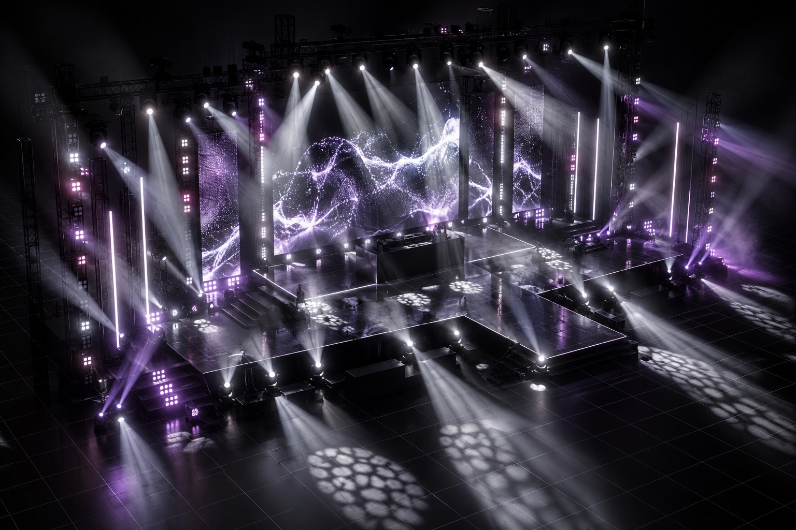

TouchDesigner is one of the best ways to get DMX, Art-Net and sACN out of a computer, and it's already the tool of choice for VJs and lighting artists. RizzStudio ships a ready-made TouchDesigner receiver that turns the MIDI coming from Ableton Live into live lighting data, plus a video bridge for LED walls.
The receiver component
Touchableton_Receiver.tox is bundled inside the app and included in every TouchDesigner kit export. Drop it
into your project and the signal chain is ready:
midi_devices → midi_in → decode (Script CHOP) → universe1 → dmx_outIts custom parameters cover everything you need on show day:
- Source: listen to the RizzStudio app directly, or to Ableton over the IAC driver
- MIDI channels: which channels carry your universes (up to 4)
- Send DMX: master on/off for the output
- Interface: Art-Net or sACN, with address and universe

The TouchDesigner kit export
Exporting the kit gives you the receiver .tox, the Python decoder script, a patch.csv with
every fixture address, and a SETUP.txt walkthrough. Hand it to the venue's TouchDesigner operator, or run
it yourself on the same Mac as Ableton.
LED walls over Syphon
RizzStudio can also go the other way. The bundled Touchableton_VideoOut.tox publishes any TOP as a
Syphon sender. RizzStudio picks it up and shows your visuals live on a virtual LED wall,
pixelated to the wall's real resolution, with stage colour spill. It can even sample the wall's colours to drive
the rest of the rig, so the lights match the visuals.

Why MIDI between Ableton and TouchDesigner?
Ableton can't output DMX natively, but it's excellent at playing MIDI in perfect time. Encoding DMX as MIDI notes (one note per channel, velocity as value) keeps the show inside Ableton's timeline, where it follows tempo and scene changes, while TouchDesigner handles the network side. See the full encoding on the Ableton DMX lighting page.
Don't want to program it?
That's what RizzStudio is for. Its AI light show generator programs the whole show from your music, and TouchDesigner just plays it.
Frequently asked questions
Do I need to know TouchDesigner?
Barely. Drop the bundled receiver component into a project, choose Art-Net or sACN and your universe, and switch Send DMX on. The kit export includes a SETUP.txt walkthrough.
Does it work with the free TouchDesigner licence?
The receiver is a small, standard network of operators. Check Derivative's current licence terms for the output features you need.